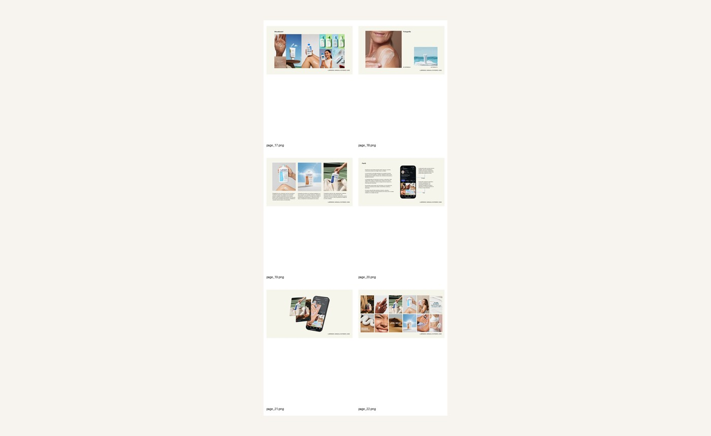
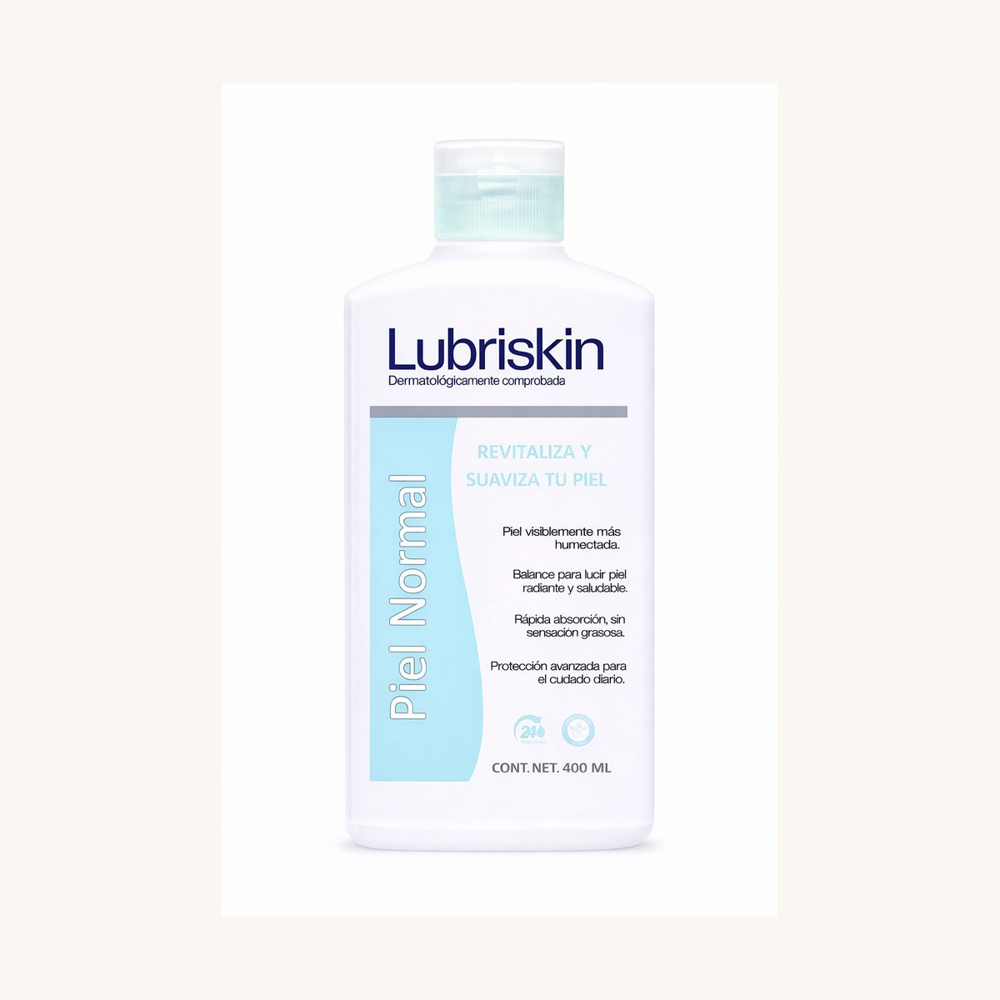
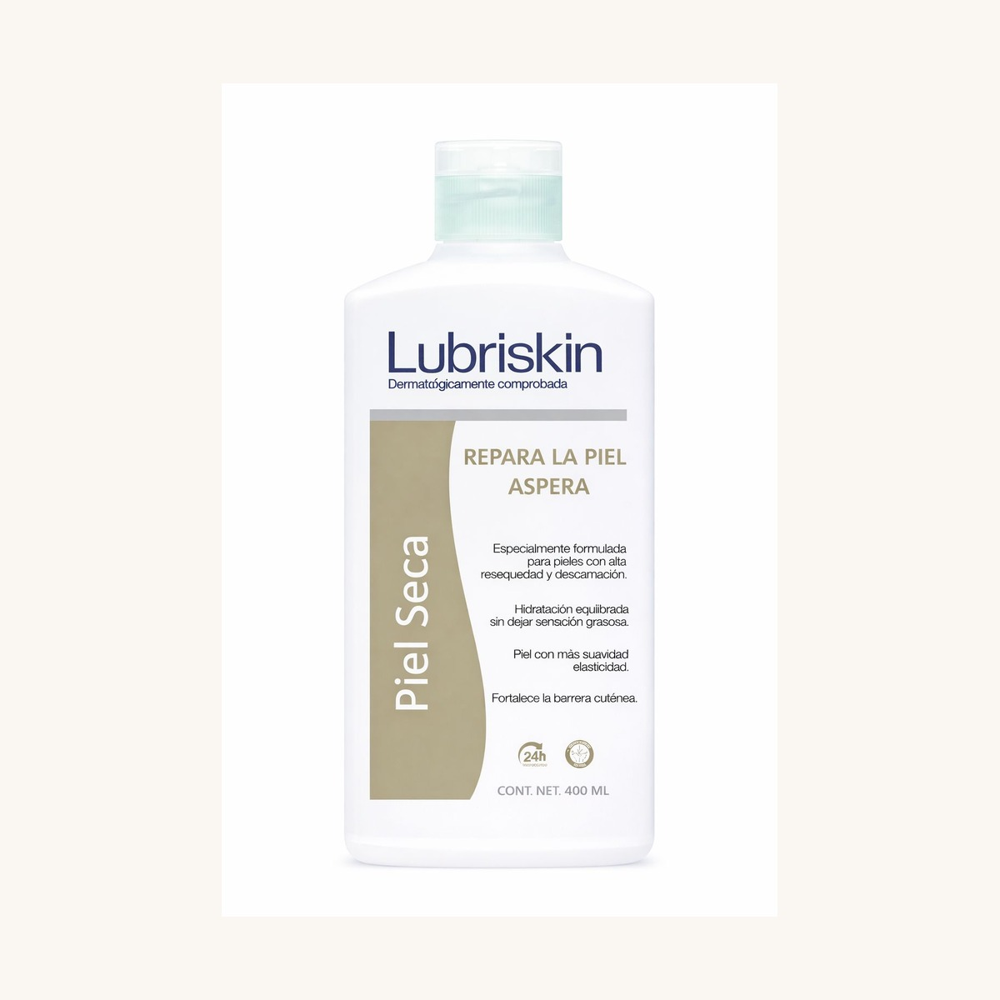
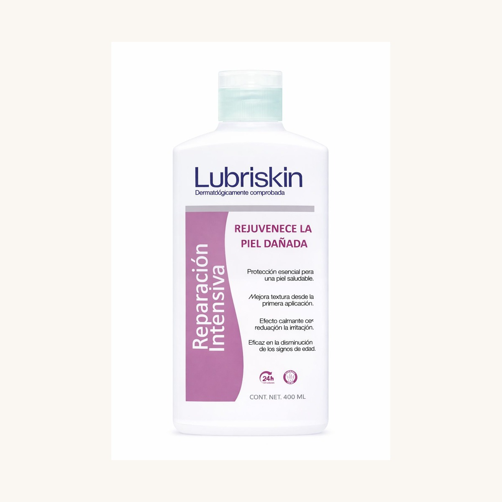
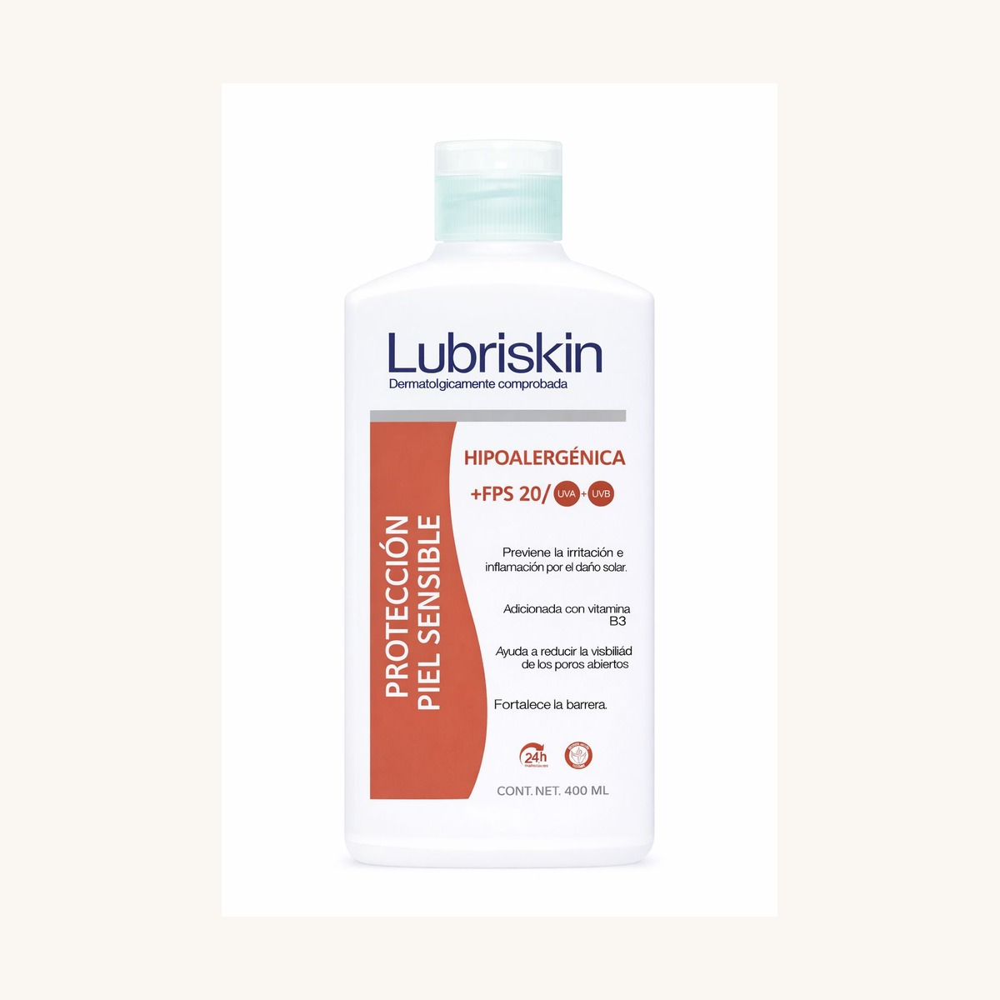
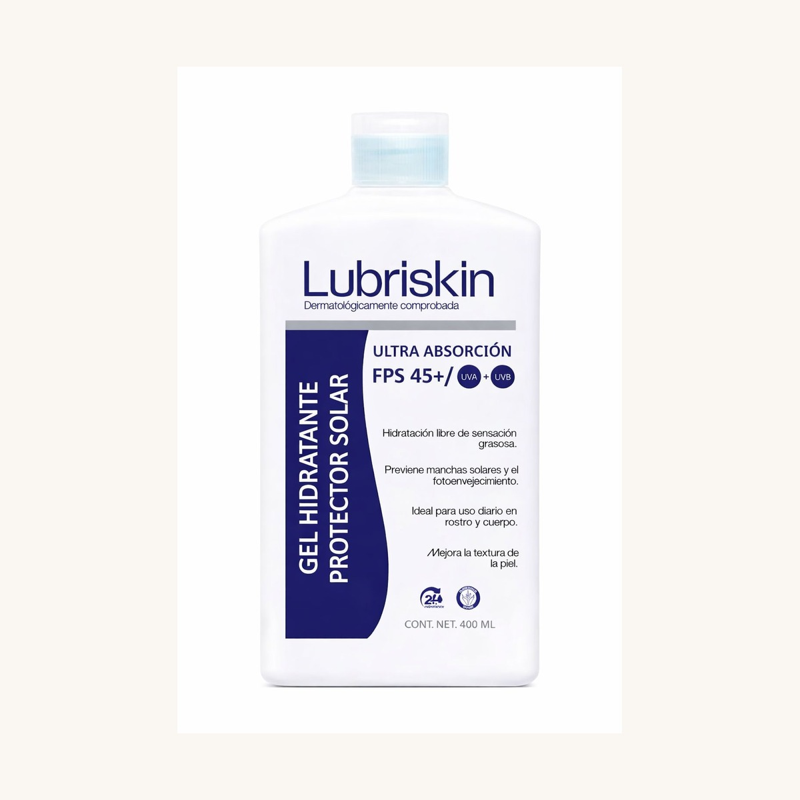
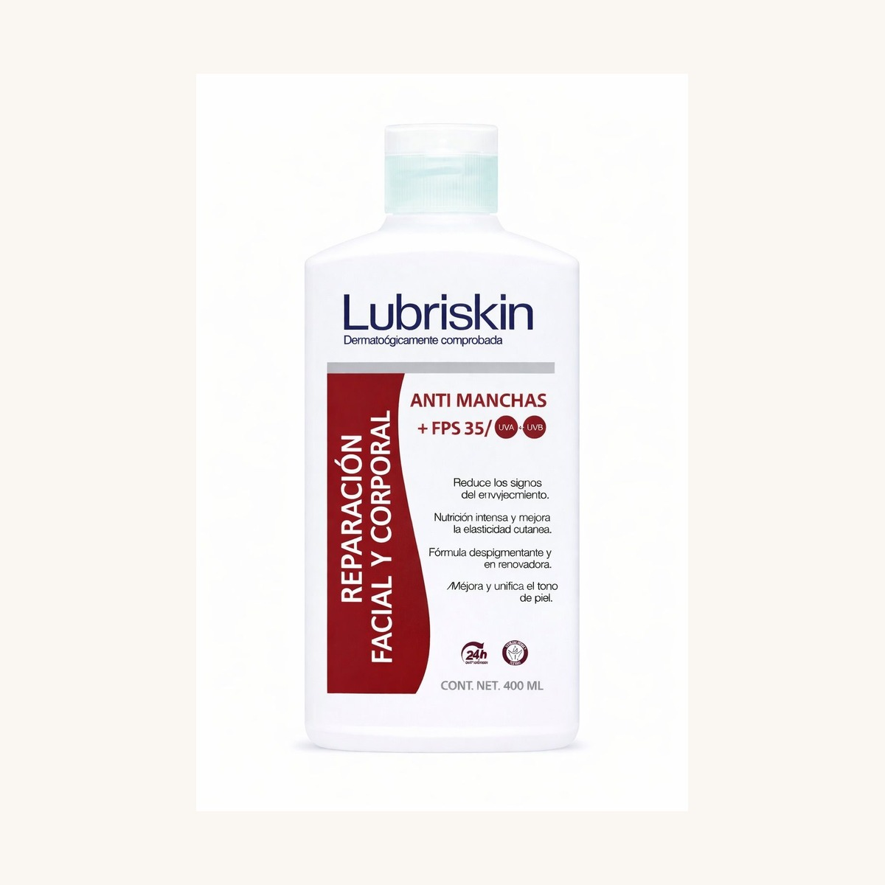

✦
Hidratación diaria
Mensajes simples, cómodos y funcionales para integrar Lubriskin a la rutina cotidiana.
Una landing page basada en la identidad visual del manual de Lubriskin: cercana, limpia, luminosa y funcional. Con fotos reales de tus cremas, video de fondo y una estética editorial pensada para verse profesional desde el primer vistazo.

Esta propuesta está pensada para verse profesional y vendible, pero manteniendo el tono del manual: hidratación diaria, cercanía, claridad, confianza y una estética suave que acompaña la rutina real de las personas.
Mensajes simples, cómodos y funcionales para integrar Lubriskin a la rutina cotidiana.
Visuales más suaves y elegantes que transmiten sensorialidad, limpieza y bienestar.
Comunicación reforzada con el respaldo del laboratorio, COFEPRIS e ISO 9001.
La página retoma el mood del manual: tonos oat cream, acentos suaves, piel luminosa, fondos limpios y una experiencia visual cuidada sin perder claridad comercial.
La estructura se siente moderna y vendible, con un look de dermocosmética limpia, pero la identidad, paleta y tono siguen siendo Lubriskin.
Cada variante aparece sobre fondos limpios y cálidos para que la página se sienta más pulida, clara y lista para presentarse al público.

Hidratación diaria de textura ligera para una rutina cómoda, práctica y constante.

Cuidado corporal que ayuda a mantener la suavidad y combatir el resecamiento cotidiano.

Una experiencia más envolvente para piel que necesita una sensación extra de nutrición y confort.

Protección diaria para piel sensible con una presentación clara, funcional y confiable.

Gel hidratante protector solar de ultra absorción para una rutina diaria más ligera.

Cuidado intensivo con enfoque en tono, elasticidad y sensación de piel renovada.
Lubriskin está respaldada por nuestro laboratorio, con licencia sanitaria ante COFEPRIS y procesos bajo ISO 9001. Esto fortalece la percepción de una marca seria, consistente y confiable para el cuidado corporal diario.